Web Design Project
Live Site Link: House of Light
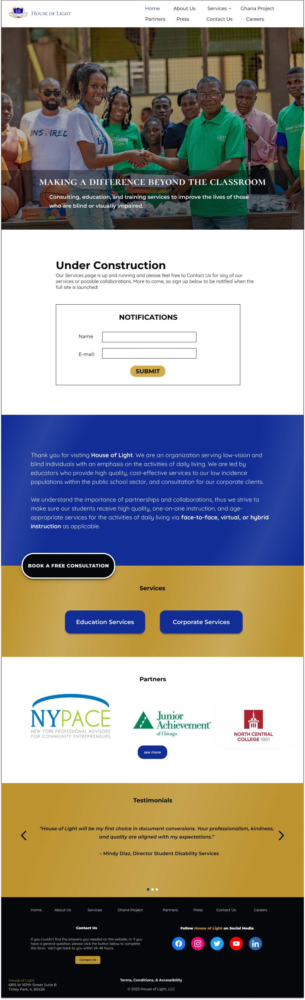
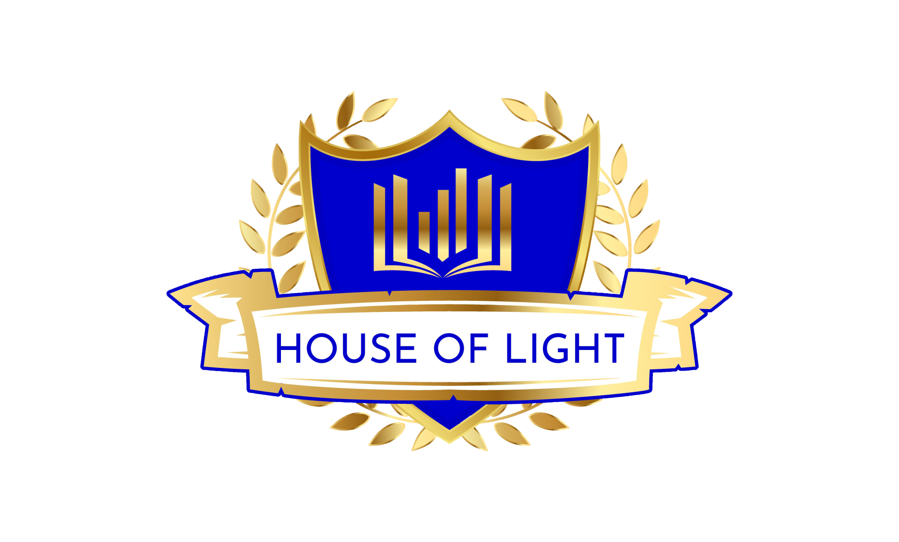
Type & Scope:
House of Light is an educational and corporate organization providing services to the blind and visually impaired. The owner and founder, Sierra Dockery, needed a redesign and hired a team of two designers and two developers on a volunteer basis. I was one of the designers, and we gave her a finished website of twelve pages. You can see the House of Light logo at left.
Role:
I and my design teammate Matt designed the mock-up pages for our developer side of the team, Stacey Riley and Tauri St Claire, to code. The about page at left highlights the story of how she was inspired to advocate for individuals with visual impairments after her grandmother experienced visual loss shortly after Sierra graduated, so she founded House of Light, a consulting and training company specializing in treatment for blind and visually impaired individuals.
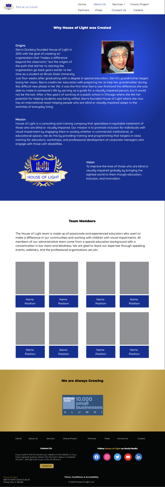
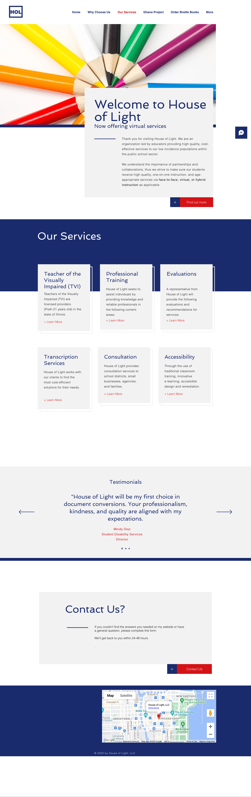
Overview:
The owner felt House of Light's original website was less corporately professional than she wanted. We replaced the original coloured pencil hero image with a more corporately professional image of the owner with a group of African people in front of the school for the Ghana Project that she helped build. We also replaced her typography with a more corporate-feeling typography. The original homepage is at left for comparison with the new homepage up at the top.
Goals & Problems Solved:
The volunteer team I was on met the goal of redesigning the website to a more corporately professional feeling was, I think, admirably met. At right is the redesigned services page.
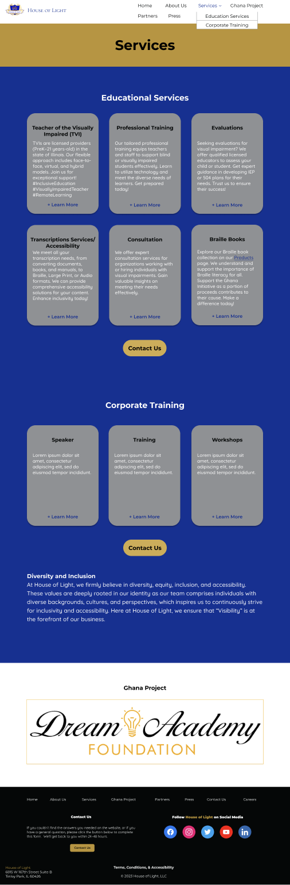
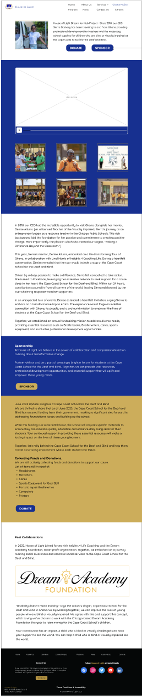
Design Process:
Step one of the design process was to create basic wireframes. I started with 1024 pixel height, which gave it 768 pixel width. I thought it was a good size for desktop until it was pointed out by one of the developers on the team that it was tablet size. I researched desktop website sizes and settled on 1280-pixel height by 1024-pixel width. At left is the Ghana Project Dreams Academy Foundation page, an annual fundraising foundation mission for Cape Coast School for the Deaf and Blind.
Brand colours: We were provided with a brand guide, which provided brand colours and the original typeface fonts. We were told she wanted the brand colours, but was open to new fonts. Brand colours provided, according to Coolors, were black, hex #040707, international Klein blue, hex #102e96, gold, hex #a58129, white, hex #ffffff, and battleship grey, hex #8f9194. For contrast's sake, the original gold had to be lightened to satin sheen gold, hex #bc942f, but after checking with Sierra, she was ok with the change. You can see the new brand colours under the Client Color Scheme section in the style tile at right.
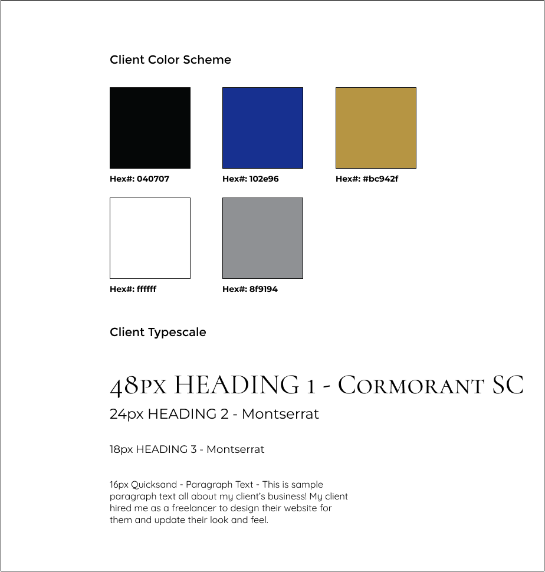
Font pairing process: The brand guide for House of Light presented us with Apple SD Gothic Neo as the main typeface, Hiragino Kaku Gothic as the primary typeface, and Avenir as the secondary typeface. The new fonts chosen were Cormorant SC for title/main typeface, Montserrat for headers/primary typeface, and Quicksand for paragraph/secondary typeface. You can see the new fonts under the Client Typescale section in the style tile at left

Content collection process was a bit of a long process because not all media images were available at once. Started with the House of Light logo, and only 3 of the pictures being available for the Ghana Project page. I was able to rescue 3 partner logos from a Google doc, but the rest of the logos and images came along later. At left is an old passion page from the original House of Light site, and below you can see Partners, Press, and Products pages from the new site.
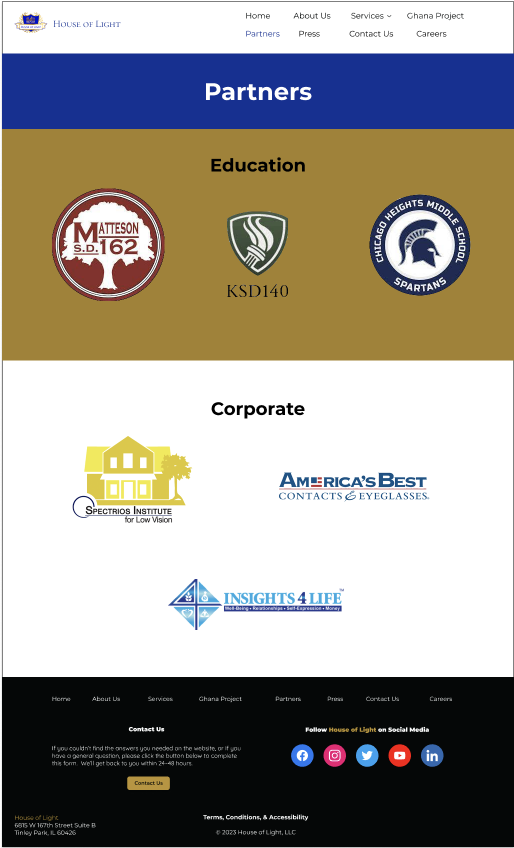
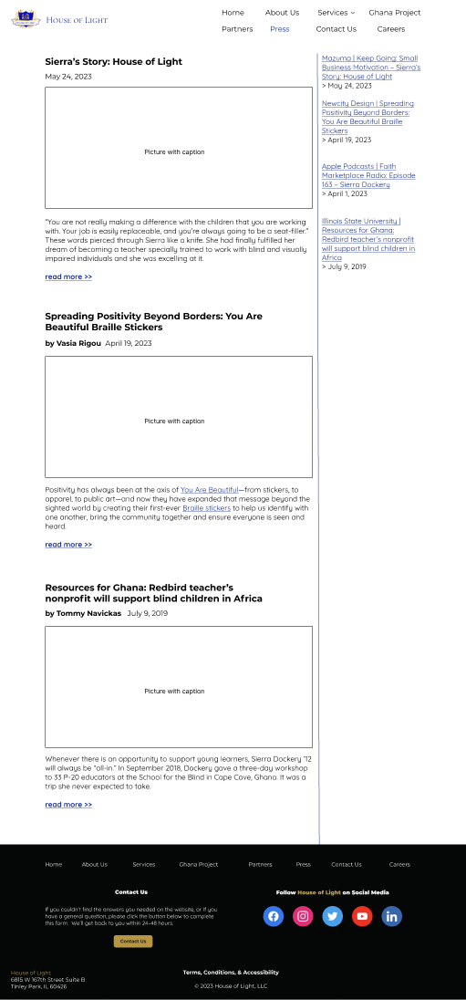
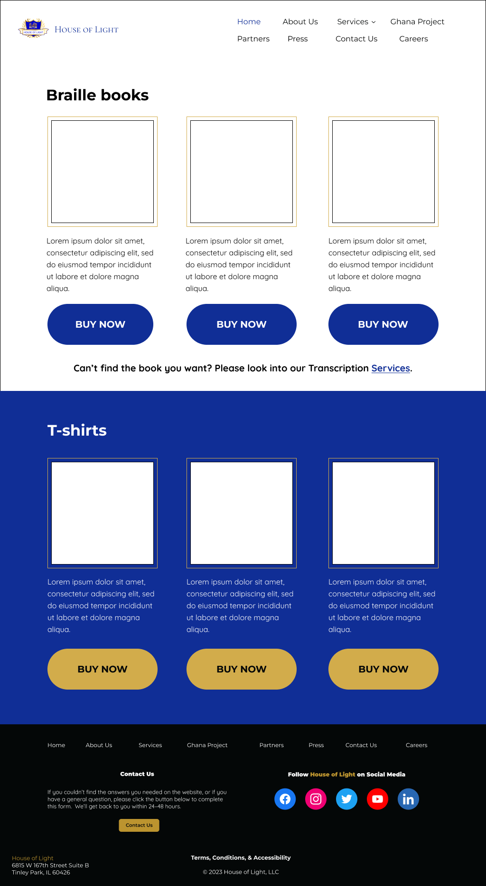
Website layout: My co-designer, Matt, made the header and footer for the pages, as well as a hero image for the homepage. For the Ghana Project page, he added a video placeholder to my page design, and I handled the majority of the partners, careers, press, services, contact, and products pages, while he handled the majority of the about frequently asked questions and about us page. We both added tweaks as needed after the pages were mostly finished, as there was more information that we either missed or received from the owner as the design and development progressed.
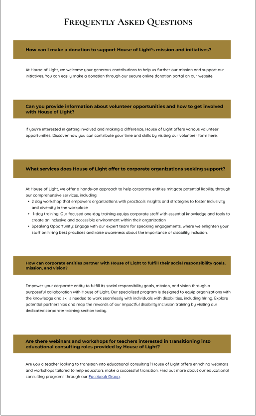
Challenges & Takeaways:
Still having trouble at times putting enough white space in between sections for breathing room, but I'm working on it. Working on this project helped me grow a lot due to working in a team and getting real-time feedback from my fellow teammates and the client pushing me to hone my designs.